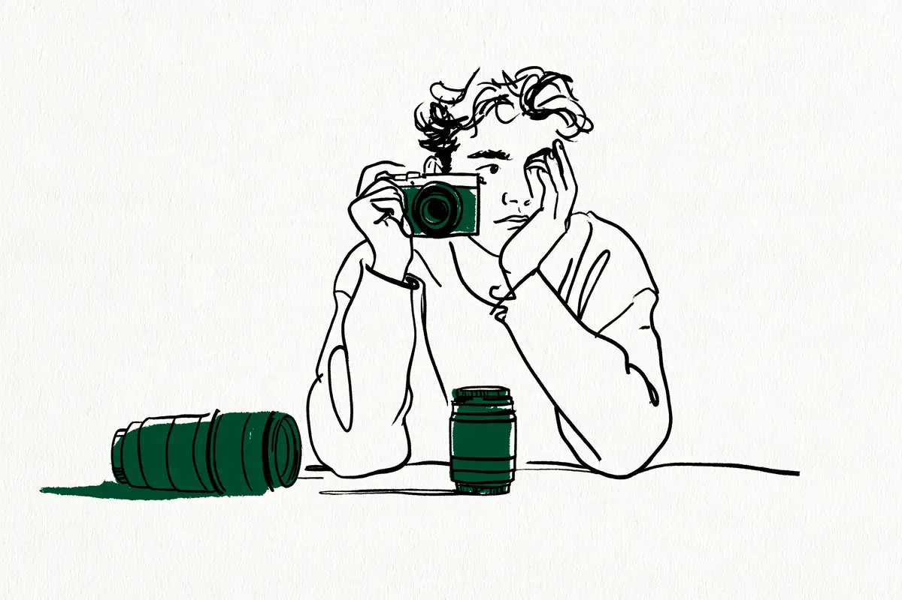

この記事には広告(アフィリエイトリンク)が含まれます。
現在地: 買う前に迷ってる
キヤノン EOS R50の後悔・デメリット、買った人の不満と手放した理由

EOS R50を自分で買った・使っていると書いた53人のうち、R50本体を「後悔」の語で悔やんだ人は見つかりませんでした。買ったことを悔やむと読める書き方(私の読み方です)をした人は2人います。「後悔」の語を使った人は4人で、選び方の失敗が2人(1人は題で)、夜景を撮った1回が1人、否定の形が1人です(後悔の節)。使い続けている人は34人(満足10人、満足と不満の両方19人、レンズや別の機種を足した5人)です。
- 本体を手放した・替えた人は8人です。売った・下取りに出した・手放したと書いた人が5人、次の機種を買ったとだけ書いた人が3人。理由は、自分の撮り方と合わない、使い切って物足りない、小さくて扱いにくい、合うレンズがなく出番も減った、動画が1人ずつで、3人は書いていません(人ごとの節)
- 買い替えや手放すことを検討している人は別に8人です(1人は売る予定、1人は手放そうと思うが迷っている、と書いています)。使っていない・しばらく離れたなど、このサイトの後悔の基準に当たる・近い人は5人
- 上の4つの数(4人・5人・8人・8人)は重なっていて、どれかに入る人は53人中21人です
- 最初の1台と本文で確定できる8人のうち2人は、約1か月と約1か月半で替えました(立場の節)
- 不満の種類は早見表に。公式の仕様では、本体の手ブレ補正は非搭載です
- 探しきれなかった範囲があるので、どの数も割合としては読めません(数え方と偏り)
EOS R50はキヤノンのミラーレス(言葉の意味)で、2023年3月下旬に発売されました。センサーの規格はAPS-C(フルサイズより一回り小さい。言葉の意味)です。名前の似た「EOS R50 V」はのぞき窓のない別の機種で、数えていません(違いはR50 Vの節に)。私はカメラを持っていないので、人の声を集めて整理する側で、買う・買わないはすすめません。2026年11月18日に数え直しました(訂正は数え方と偏りに)。
- まだ買う前で、後悔しないか知りたい → 早見表、後悔の節、手放した・替えた人、最初の1台の人、公式の数字と販売状況
- 買ったばかりで、不満が出てきた → レンズの不満、暗い場所の不満、本体の不満
- 使っていて物足りない・出番が減ってきた → 買い替え・手放しを検討している人、R50 Vとの乗り換え
目次
- EOS R50のデメリット・欠点の早見表: 不満の種類、人数、その人がどうしたか
- EOS R50で後悔した人は?本体を悔やむ書き方の2人と、「後悔」の語を使った4人
- EOS R50を手放した・替えた8人: 行き先と理由を、人ごとに
- EOS R50のレンズのデメリット: 望遠・写る範囲・交換の手間・選べるレンズ
- EOS R50のデメリット「暗い場所・夜景・逆光」: 体育館、博物館、夜の街
- EOS R50の本体のデメリット: 握りにくい・AF・操作・ストロボ・手ブレ補正
- EOS R50を書いた人の立場: 初心者(最初の1台)と経験者
- EOS R50に満足した人の声: 小さい、ボケ方が変わった
- R50 VとEOS R50: 逆向きに乗り換えた2人と、公式の違い(ファインダーの有無)
- EOS R50の公式の数字(質量・電池の枚数・連写・手ブレ補正)と販売状況(2026年11月時点)
- 数え方と偏り
- EOS R50は買わない方がいい?読んだ範囲の答え
EOS R50のデメリット・欠点の早見表: 不満の種類、人数、その人がどうしたか
53人のうち不満を1つでも書いた人は41人で、1つの話題を1行に分けました。私の読み方で、1人が2つ以上に入ります。右の列は、その行の人がどうしたかの内訳です。「使い続けている」は下の結果表の「両方」の人、「手放した」は売った・下取りに出した・手放したと書いた人、「替えた」は次の機種を買ったとだけ書いた人を指します。
表の中の言葉の意味
| 種類(私の読み方) | 書いた人数 | その人がどうしたか(内訳) |
|---|---|---|
| 本体の機能・形 | ||
| 握りにくい・小さくて扱いにくい(グリップが浅い・知らないうちにボタンを押している) | 5人 | 手放した1、買い替え・手放しを検討2、使い続けている2(うち購入リンクあり1) |
| AF(手前のものや網に合う・動くものに追いつかない・迷う) | 5人 | 替えた1(購入リンクあり)、買い替え・手放しを検討1、レンズを足す1、使い続けている2 |
| 操作(ダイヤルが1つ・全自動で手動ピントが使えない・多重露出がない) | 5人 | 替えた1(購入リンクあり)、買い替え・手放しを検討2、使い続けている2(うち購入リンクあり1) |
| ストロボ(前からのストロボやトリガーにアダプターが要る・光らない) | 5人 | 手放した1、使い続けている2(うち購入リンクあり1)、困りごとを相談2 |
| 本体の手ブレ補正がない | 3人 | 替えた1(購入リンクあり)、使い続けている2(うち購入リンクあり1) |
| ファインダー(小さく見づらい・暗い場所で表示がカクカクする) | 2人 | 替えた1(購入リンクあり)、使い続けている1(購入リンクあり) |
| 動画(4K60pで1時間ほど撮りたい・初めから動画が目当てだった) | 2人 | 替えた2(うち購入リンクあり1) |
| RAWの連写が止まる | 2人 | 使い続けている2(うち購入リンクあり1) |
| 修理のあとの不安・撮影回数が増えた | 2人 | 手放した1、別の機種を足した1 |
| バッテリー | 1人 | 使い続けている1(購入リンクあり) |
| 暗い場所・上位機・使い方 | ||
| 暗い場所・夜景・逆光 | 7人 | 替えた2(2人とも購入リンクあり)、買い替え・手放しを検討2、使い続けている3(うち購入リンクあり2) |
| 上位機・フルサイズ機に進みたい・物足りない | 11人 | 手放した2、替えた2(2人とも購入リンクあり)、買い替え・手放しを検討4、使い続けている3(うち購入リンクあり2) |
| 自分の撮り方と合わない | 1人 | 手放した1 |
| 使っていない・出番が減った・しばらく離れた | 5人 | 手放した1、買い替え・手放しを検討1、使い続けている3 |
| 持ち運び・荷物 | 2人 | 買い替え・手放しを検討1、使い続けている1(購入リンクあり) |
| レンズ・買い方 | ||
| 望遠が足りない | 4人 | 替えた1(購入リンクあり)、レンズを足す2、使い続けている1 |
| レンズの付け替えが手間 | 2人 | 買い替え・手放しを検討1、使い続けている1(購入リンクあり) |
| 写る範囲(キットの広い側・買い足すレンズが室内や普段使い、動画で狭い) | 7人 | 手放した1、替えた1(購入リンクあり)、買い替え・手放しを検討1、使い続けている4(うち購入リンクあり2) |
| キットが暗い・ボケが足りない | 3人 | 替えた1(購入リンクあり)、使い続けている2(うち購入リンクあり1) |
| 描写(写りの細かさ・周辺の写り方) | 2人 | レンズを足す1、使い続けている1 |
| 選べるレンズ(手ごろなレンズが少ない・別売りが高い・明るくて軽いレンズや合うレンズがない) | 4人 | 手放した1、使い続けている3(うち購入リンクあり2) |
| キットのレンズを使わなくなった | 2人 | 買い替え・手放しを検討1、使い続けている1 |
| アダプターで付けたレンズと釣り合わない | 1人 | 別の機種を足した1 |
並びは人数順ではなく、行の分け方で順位が変わります(本体の機能・形の10行をまとめれば19人、レンズの8行なら19人、暗い場所と上位機なら13人)。ファインダーとバッテリーの行は、書いた人が全員、購入リンクのあるサイトの書き手でした。良い点は入れていません。
53人の結果を、購入リンクの有無で分けました(判定の仕方は数え方と偏りに)。
| 結果(私の読み方) | 人数 | うち購入リンクがないと確かめられた書き手 |
|---|---|---|
| 満足 | 10人 | 5人 |
| 満足と不満の両方を書いて使い続けている(両方) | 19人 | 15人 |
| 本体は続け、レンズを足そうとしている | 3人 | 3人 |
| R50を残して別の機種を足した | 2人 | 2人 |
| 売った・下取りに出した・手放したと書いた | 5人 | 5人 |
| 次の機種を買ったとだけ書いた(R50をどうしたかは書いていない) | 3人 | 1人 |
| 買い替え・手放しを検討している | 8人 | 8人 |
| 困りごとだけで、評価はない | 2人 | 2人 |
| 買った直後で、評価はまだ | 1人 | 1人 |
「両方」の19人には、売るか迷って続けた1人、カメラの不満ではない事情で手放すことを考えて残した1人、手持ちの一覧から一度消えたあとまた使っている1人が入っています。満足の10人のうち2人は、評価が1〜2文の記事でした。
EOS R50で後悔した人は?本体を悔やむ書き方の2人と、「後悔」の語を使った4人
R50本体を「後悔」の語で悔やんだ人は見つからず、買ったことを悔やむと読める書き方をした人が2人いました。「後悔」の語を使った4人(選び方の失敗2人・夜景1人・否定の形1人)のうち3人は、購入リンクのあるサイトの書き手です。その3人の記事は、「EOS R50 後悔」の検索(Google、2026年10月)で上に出る、題に「後悔」か「失敗」の入った3本でした。語の数は、検索向けに付けた題にも左右されます。海外の掲示板(Reddit)の投稿は、書き手を確かめられないので数えていません。
写真素人ツバメさん(カメラの紹介もしているサイトです)は、標準ズームのキットを半年使った記事で、失敗して後悔したことを5つ挙げました(2025年12月)。補正のない望遠レンズを新品で買ってすぐ売ったこと、安いSDカード、店でほかのメーカーの機種と比べなかったこと、などです。本体については、こうでした。
今のところ後悔しているわけではありませんが、やはり高額な買い物。
翌月にはNikon Z5IIを買いました(次の機種を買ったとだけ書いた3人)。
ちみみさん(カメラの紹介もしているサイトです)の記事は、検索結果に出る題に後悔の語が入っています。本文の見出しは「こうすればよかった」で、挙げたのは2つです(2026年)。1つは、買い足した35mmの単焦点が室内では狭く、24mmにすればよかった、という話。35mmを選んだことを、こう振り返っています。
中途半端だったなと今になって思います
もう1つは本体の選び方で、初めから大きいセンサーの機種にする手もあった、最初の1台は中古で足りた、と並べています。
3人目は、ブログ「節約フォトグラファー」の書き手(カメラの紹介もしているサイトです)。小学生のころから一眼レフを使う経験者で、R50は予備機です。題にある後悔の話は、ほかの撮影者についての伝聞なので数えていません。本人は2025年12月にこう書きました。
予備機としても役立つし、Canon EOS R50を購入したことは全く後悔していない。
4か月後、同じ書き手のnoteでは向きが変わります(2026年4月)。本人がこのブログを自分の個人ブログとして紹介しているアカウントで、noteのほうに購入リンクはありません。
これは自分にとっては黒歴史なのだけれども、実はCanon EOS R50を持っている。
つまり何が言いたいかというと、R50は中上級者が使う機材ではないのだ。
これを「買ったことを悔やむ」と読んだのは私です。挙げた弱点は3つ。前からのストロボをじかに付けられないこと、逆光で陰になった顔をあとから明るく直しにくいこと、明るくて軽いレンズがないことです。人にはすすめないが、もう持っているので予備として持って行く、という結びでした(2日前の記事も同じ向きです)。
4人目のつっきーさんは鉄道を撮る人で、旅先の夜景をR50で撮った日の記事に、スマホで撮るほうがよかったという意味で「後悔」の語を使いました(2026年10月)。
悔やむ書き方のもう1人は、jaguarさんです。白いR50で撮った写真の記事にこう添えました(2026年。「買ったおけば」は原文のままです)。
最近あまり使っていない。こんな事ならR10買ったおけば良かった。
このサイトでは、後悔・使わなくなった・無駄だった、のどれかを本人が書いていれば後悔の側として数えます。当たる人・近い人は、jaguarさんを入れて5人です。知恵袋の質問者は、買って2年あまりで使ったのは3回(検討している8人)。しょこたんさんは、2026年5月に勢いで買いました。買ったときは毎日触るつもりだったが、と前置きして、4か月後にこう書いています。
全然触れてないし、まだ慣れていません。。
ひびの。さんは、思うように撮れず写真が楽しくなくなった時期に、カメラからしばらく離れていました(2026年9月)。買い替えはしないと書き、11月もR50で撮っています。5人目は、R50の出る幕がなくなったと書いて下取りに出したbebe1998さんです(次の節)。
EOS R50を手放した・替えた8人: 行き先と理由を、人ごとに
売った・下取りに出した・手放したと書いた人が5人、次の機種を買ったとだけ書いた人が3人です。行き先は、フルサイズ機が5人(キヤノン3人・ソニー1人・ニコン1人)、富士フイルムのAPS-C機が1人、動画向けのR50 Vが1人。残る1人は、EOS R7を主に使うようになったあと、別のメーカーのフルサイズ機を買うときに手放しました。行き先の人数は、探した機種名の影響を受けます(数え方と偏り)。8人のうち2人は購入リンクのあるサイトの書き手です。理由は、手放した・替えたと書いた記事とその前後にあるものだけを数えました。
売った・下取りに出した・手放したと書いた5人
vivid_clam836さんは、R50が最初の1台でした。2026年2月に店で決めて買い、約1か月半後にこう書きました。
結論からいうと、このCanonのカメラは買取に出して、新しいカメラを買い直した。
私の好みのカメラの使い方では、せっかく持っているCanon EOS R50 の高いスペックを使いきれない。
オートでよく撮れるので、設定を自分で決めて撮りたい自分には合わなかった、という説明です。買うときにほかのメーカーと比べなかった、とも。次は、店で手にしたときの感触とシャッターを切る音でニコンのZ fcと富士フイルムのX-T30 IIIに絞り、AIに相談してX-T30 IIIにしました。
ツトムさんも最初の1台で、カメラを始めて1か月ほどで替えています(2026年)。
なんでかって言ったら俺が買ったCanonのＲ50がなんか小さくて使いづらいなって思っていたからである。
写真教室でまわりの人のフルサイズ機を見て憧れたことも、理由に並べました。店で2機種を触り、ソニーのα7 IVを選んでいます。翌月の記事に下取りの話があります(いつ出したかは書かれていません)。
R50を下取りに出したおかげでだいぶ安く買うことができた。
mikaccoさんは、球場と建築を撮る人です。2023年に買って約2年使い、EOS R6 Mark IIに替えました(2025年)。こう書いています。
去年くらいから「ちょっと物足りないな」の気持ちは正直ありました。
今回、悩んだ末にR50は下取りに出しました。
性能の9割ほどは引き出せたと思えた、とも。
bebe1998さんは何台も使う経験者で、2026年の春に白いR50を、フルサイズ機のEOS R8に替えました。きっかけは、広く写る単焦点(写る範囲が決まったレンズ。言葉の意味)を付け、揺れを抑える道具(ジンバル)に載せて撮った動画に納得がいかなかったことでした。
R50はともても良いカメラですがちょうどいいレンズがないんですね
「ともても」は原文のままです。前の年にコンパクト機を入れ替えてからスナップの出番が減り、通勤と動画の出番もなくなり、R50も下取りへ回しています。
Emoさんは経験者で、カメラ歴の記事にR50が出てきます(2026年)。2023年に買い、目立つ不満はなかったとしたうえで、持っていたストロボを使うのに追加の部品が要った点を挙げました。2025年にEOS R7を買ってR50を2台目に回し、同じ年にパナソニックのフルサイズ機を買うときに手放しています。手放した理由は書かれていません。R7を買った理由は、修理から戻ったR50を使うのが少し怖かったことと、写りでした。
次の機種を買ったとだけ書いた3人
この3人は、R50をどうしたかを書いていません。写真素人ツバメさん(後悔の節)は、2026年1月の記事でNikon Z5IIを買いました。
これまではキヤノンのAPS-C機、EOS R50を使っていたのだ。
この記事にR50をやめた理由はありません。2か月前にフルサイズ機を借りた記事では、R50についてこう書いていました。
正直、EOS R50ではファインダーが小さくて見にくいため、あまり使ったことがありませんでした。
ダイヤルが1つなので絞りの値を変えるのに手数がかかる、とも。その2日後の記事では、ニコンに傾いています。
ramu_nyannyanさん(カメラの紹介もしているサイトです)は、ダブルズームを3か月使いました。2026年2月の記事では、おおむね満足だが1年後くらいにフルサイズへ進みたい、と書いています(暗い場所の節)。8か月後です。
2026年10月29日に発売された「EOS R8 Mark II」を発売日に購入した。
この記事にR50の名前は出てこず、買った理由も書かれていません。
みとまとさんは経験者で、R50からR50 Vに乗り換えました(2025年)。
私の場合、R50はやっはり（無意識の期待が）充たされていなかった。
「やっはり」は原文のままで、初めから動画が目当てだった、という理由です。写真が中心の人にはR50で足りる、とも添えています。
買い替え・手放しを検討している8人、考えて残した2人、別の機種を足した2人
検討している8人のうち7人は知恵袋の質問者で、その後は分かりません。
- 握りにくい → 中古のR10か、別の機種か。テーマパークで撮る質問者で、R50を売って足しにする予定と書いています(本体の節)
- 2本のレンズの付け替えが手間 → レンズか本体か。パレードを撮る質問者
- すぐ取り出せず、使っていない → 手放すか。ペットを撮るために買った質問者で、とても迷っていると書いています
- 明るさと写る範囲 → フルサイズのR8かR6 Mark IIか。買い替えを相談した質問者
- 荷物を軽くしたい日に不便 → コンパクト機を買うか、買い替えるか。日常や動物を撮る質問者
- 機能とAF → R5 Mark IIへ。星空と飛行機を撮り始めた質問者
- R10の握りや操作への憧れ → 売ってR10にするか。2026年8月にダブルズームを買った質問者
- 夜景と性能 → 中級機へ。つっきーさん
3の人は、買って2年あまりで使ったのが3回、この1年は使っていません。
ペットの写真を撮りたくて買いましたがすぐに取り出せない為スマホになってしまい結局使ってない状態です。
売値を無料で知る方法は売るなら、まず無料で相場を知るに、似た声は軽くしても持ち歩かなかった人にあります。次は6の人です。
戦闘機がAF追いつかないのです
多重露出(1枚に複数の露光を重ねる機能)がないことも挙げています。次は7の人です。
今からEOS R50を買取店で売り、新たにEOS R10を購入することはしない方がいいでしょうか？
R10の深いグリップや扱いやすさに憧れた、レンズを買い足してキットのレンズは使わなくなった、と。回答を読んで、もう少し考えることにしています。次は8のつっきーさんです。
今使ってるR50は初級機ですが、早く中級機に買い替えたいです。
同じ月に一眼レフを数日借りて比べ、そのあともR50で撮り続けています。
考えて残した人は2人です。体育館で撮る質問者は、売って買い直すか迷い、回答を読んで続けました(暗い場所の節)。かおぽんさんは、カメラの不満ではない事情で手放すことを考え、撮りに出た日に、もう少し持っていることにしました(2026年)。
このところ、カメラを手放そうかと考えていた。
R50を残して別の機種を足した人は2人です。ハルサイさんは、R50の4か月後にEOS R8を足しました(2026年9月の記事)。5月の記事には、小さい本体にアダプターで大きいレンズを足すと前が重くなる、とあります。esugata_makinaさんは、2023年に買ったR50を主に使ってきました(2026年)。
今度はメイン機としてのCanon EOS R7をお迎えしました。
理由は、撮った枚数が大きく増えたことと、画素数の多い機種が欲しかったこと。3か月後の記事には、キヤノンのミラーレスを2台持っているとあります。その2台をR50とR7と読んだのは私で、手放したと書いた記事はありません。
R10を買った人の声はEOS R10の後悔・デメリットに、機種を問わない話はもう買って後悔している人へにあります。
EOS R50のレンズのデメリット: 望遠・写る範囲・交換の手間・選べるレンズ
レンズについて書いた人は19人で、話題は8つに分かれます。使い続けている10人のうち4人は、購入リンクのあるサイトの書き手でした。
望遠が足りない・交換が手間。 野球を撮るためにダブルズームを買った質問者は、100-400mmをすすめられて買い足そうとしていました(2025年)。もう1人の質問者も同じ焦点距離のレンズを検討中です(2025年)。野球観戦で使った回答者は、席によると答えました。
最前列とか選手に近い席だと付属のレンズでも綺麗に撮れますが遠いと顔とかはっきりわからないです。
交換の手間は2人。検討している8人の2番の人と、バイクで出かける風牙さん(カメラの紹介もしているサイトです)です。
写る範囲。 7人。R50はAPS-Cなので、レンズに書かれた焦点距離(写す範囲の広さを決める数字。言葉の意味)の約1.6倍と同じ範囲が写ります。キットの標準ズームは18mmからで、私の計算では約29mm相当です(下の回答者は28mmと書いています)。
✕キットレンズの広角端が28mm(フルサイズ換算)のスタート。24mmスタートが欲しい。
カメラ歴15年のNEKOさん(カメラの紹介もしているサイトです)も、欠点を挙げた記事で同じ点をいちばんがっかりした点にしました。単焦点を買うかどうかの質問には、R50を使う回答者が答えていました。
R50使っています、ポートレートにはいいですが普段使いに50mmはちょっと使いづらいです。
暗さと描写。 写真素人ツバメさんは、キットの標準ズームではボケが物足りない、と。ボートレースを撮る沙野さんは、キットのF値(光の通り道の広さを表す数字。言葉の意味)を、妥協した点に挙げました。鉄道を1年撮った質問者は、本体は続けてレンズを足す側です。Lレンズは、キヤノンの上位のレンズの呼び名。
1年使い続けて今のレンズの描写やAF性能に物足りなさを感じるようになり、憧れのLレンズの購入を検討しています
試し撮りをした質問者は、絞りを開けて撮った写真の周辺で、光が流れて写るのを気にしていました(2024年)。
選べるレンズ・キットを使わなくなった。 2023年の回答者は手ごろな値段の交換用レンズが少ないこと、NEKOさんは別売りのレンズが高いことを挙げています。タマムシさんは、借りて試してからダブルズームを買いました。
・セットだった方のズームレンズの出番が無い。
レンズの不満は、望遠、写る範囲、交換の手間、暗さ、選べるレンズの話でした。
EOS R50のデメリット「暗い場所・夜景・逆光」: 体育館、博物館、夜の街
7人。使い続けている3人のうち2人は、購入リンクのあるサイトの書き手です。ramu_nyannyanさんは、2026年2月の記事でこう書きました。
やはりどうしても暗所で撮影をしないといけないタイミングはあって、そんな時に性能不足を痛感してしまう。
8か月後にフルサイズ機を買った人です(次の機種を買ったとだけ書いた3人)。体育館でバスケットボールを撮る質問者は、買った翌週でした(2025年)。
しかし、体育館が暗いこともありもう少し綺麗に撮りたいなと思いました。
風牙さんは、暗い館内やガラス越しの展示が難しく、スマホの手軽さに負けそうだと書きました(2026年)。夜景はつっきーさん、逆光は節約フォトグラファーの書き手、明るさは検討している8人の4番の人です。
声に出たのは、体育館、博物館、夜景、逆光でした。暗い場所で写真がブレる・ザラつく仕組みは暗い場所でブレる・ザラザラになるのはなぜ?に、逆光で顔が暗く写るときの手は逆光の人物にあります。
EOS R50の本体のデメリット: 握りにくい・AF・操作・ストロボ・手ブレ補正
本体の機能や形の不満を1つでも書いた人は19人です。
握りにくい・小さい。 5人。1人は替え(ツトムさん)、2人は替えるか迷っている人です。
Canon R50を使っているのですが、ボディが握りにくく、買い替えを検討しています。
かわこさんは経験者です。R50は2025年7月に新しく買い、9月の記事では手持ちの2台の1台でした。12月の記事の手持ちの一覧にR50はなく、2026年6月の記事からまたR50で撮っています。手放した・買い直したとは書かれていません。次は2026年7月の記事です。
R50は本当に小さくて軽いのはいいのですけど、いつの間にか親指の付け根でボタンを押してたりも。
LUMIX G100Dの記事とEOS R10の記事にも出てくる人で、R50は2026年11月も使っています。NEKOさんは、グリップが浅く、超望遠を付けると釣り合いが悪い、と。
AF。 5人。かわこさんは、望遠で狙うと手前のものに合いたがる、高倍率ズームでは迷う、と書きました。買ったばかりの凪帆さんは、動物園での1枚です(2026年11月)。
トラのところは、細い網と太い網があって、なかなか双子にピントが合わない。
操作。 5人。ダイヤルが1つしかないことを2人が挙げ、どちらも購入リンクのあるサイトの書き手です。NEKOさんは、3年以上使った時点のnote(表示名は「ねこ」)にこう書きました(2026年)。
やっぱりダイヤルが一つというのはカメラとして無理があると、R50を使うたびに再認識させられますね～。
全自動のモードで手動のピント合わせが使えないのがたまに不便だ、という質問者もいます(2026年)。全自動とPモードの違いはPモードとは?全自動との違いに。
ストロボ。 5人。カメラ上部の取り付け口が新しい規格(マルチアクセサリーシュー)で、前からのストロボやトリガーには変換の部品(アダプター)が要ります。
そんな訳でCanon EOS R50はガイブストロボの利用に関して課題を抱えている。
外部ストロボのことです。知恵袋には、トリガーが接続できない質問者(2024年)と、アダプターを付けても光らない質問者(2026年)がいます。
手ブレ補正・ファインダー・連写・バッテリー。 キヤノンの仕様表では、本体の手ブレ補正は非搭載です。不満に挙げた3人のうち2人は購入リンクのあるサイトの書き手で、その1人の写真素人ツバメさんは、補正のない望遠レンズでブレた写真が増えた、と書いています。ファインダーは、小さく見づらい(写真素人ツバメさん)、暗い場所で表示がカクカクする(NEKOさん)の2人。RAWの連写は2人です。
撮影画質をJPEGオンリーにしないとまともに連写できませんでした。
仕様表の連続撮影可能枚数は、いちばん大きいサイズのJPEG(JPEGラージ)約42枚に対して、RAWは約7枚です。バッテリーを本人の体験として不満にしたのは、NEKOさんの1人でした。
持ち運び・重さ。 荷物になる・持ち運びが面倒と書いた人が2人、すぐ取り出せずに使っていない人が1人います。重いと書いた人は見つかっていません。
本体の不満は、握りにくさ・AF・操作・ストロボが5人ずつで、握りにくさを書いた5人のうち3人は、替えたか、替えるか迷っています。早見表でいちばん人数の多い行は、上位機に進みたい・物足りないの11人で、人ごとの話は手放した・替えた人にあります。
EOS R50を書いた人の立場: 初心者(最初の1台)と経験者
最初の1台と本文で確定できる人は8人、そう読める人が8人、経験者が13人、どちらとも分からない人が24人です。
確定できる8人の結果は、満足1人、両方4人、買い替えを検討1人、手放した2人でした。手放した2人(vivid_clam836さん・ツトムさん)は、約1か月半と約1か月で替えています。手放した・替えた8人では、最初の1台が2人、そう読める人が2人、経験者が3人、分からない人が1人。比べられる数ではありません。
最初に買ったカメラの記事では、R50を最初の1台として買った人を3人だけ読みました。今回は2台目や予備の人も含め、続きの記事も読んでいます。
EOS R50に満足した人の声: 小さい、ボケ方が変わった
満足と読んだ10人は、経験者5人・最初の1台1人・そう読める人2人・分からない人2人です。購入リンクのあるサイトの書き手が4人、判定できない人が1人います。引用枠にしたのは購入リンクのない書き手だけです。
EOS R6 Mark IIも持つ知恵袋の回答者は、R50をすすめる側の答えでした(2024年)。
小さいし旅行にも邪魔になりません。
しま鯛さんは、コンパクト機から2026年に替えた人です。
R50に替えてからはぼけ方がはっきり変わりました。
コンパクト機で競馬を撮っていた白井さんは、写りと狙いどおりに撮れる割合が良くなった、と(2026年)。
R50 VとEOS R50: 逆向きに乗り換えた2人と、公式の違い(ファインダーの有無)
EOS R50 Vは、2025年5月下旬に発売された動画向けの機種です。R50 Vを買った人の声は6人読みましたが、別の機種なので53人には数えていません。
公式の仕様では、センサーの大きさと画素数は同じで、質量も約370gと約375gです(R50 Vの仕様)。違いで声に関係していたのは、ファインダーの有無でした。R50にはあり、R50 Vにはありません(R50 Vの発表資料)。
両方を買った人が2人いて、向きが逆でした。みとまとさんは動画のためにR50からR50 Vへ(次の機種を買ったとだけ書いた3人)。wakazo_kogaさんは、一眼レフからR50 Vに移った約1か月後に、R50に乗り換えました。買ったときはこうです(2026年9月)。
＃個人的にはファインダーがなくても支障がない。
翌月の記事にある理由です。
R50Vの画質と写真機能が微妙だったし、ファインダーのありがたさがわかったから
R50の評価はまだ書かれていないので、R50の人数には入れていません。R50 Vに満足した人も読みました。ざんぞうさんは、のぞき窓のない不安は当たらなかった、と(2026年)。taikouさんは、向かない人に、のぞき窓を使って撮りたい人を挙げました。どちらが向くかは、この数人の例では決まりません。
EOS R50の公式の数字(質量・電池の枚数・連写・手ブレ補正)と販売状況(2026年11月時点)
声に出た不満を、キヤノンの公式ページの数字と並べました。EOS R50の仕様ページ・製品一覧・公式通販(キヤノンオンラインショップ)の商品ページを2026年11月18日に見た値です。発売の時期は発売時のニュースリリースにあります。
| 項目 | 公式の記載 |
|---|---|
| 発売 | 2023年3月下旬 |
| 質量 | 約375g(ブラック、バッテリー・カード込み)。本体のみ約328g |
| ボディ内手ブレ補正 | 手ブレ補正機構 非搭載 |
| ファインダー | 電子ビューファインダーあり(0.39型、約236万ドット) |
| 撮影可能枚数(電池1個で撮れる枚数、CIPA基準) | ファインダー撮影 約310枚/モニター撮影 約440枚(常温、省電力優先) |
| 連続撮影可能枚数 | JPEGラージ 約42枚/RAW 約7枚(約12コマ/秒のとき。キヤノンの試験条件) |
| センサー | APS-C(約22.3×14.9mm)、最大約2420万画素。写る範囲はレンズの表記の約1.6倍相当 |
| 現行の構成 | ボディー、RF-S18-45 IS STM レンズキット、ダブルズームキット。色はブラックとホワイト |
| 公式通販の状況(2026年11月18日) | 6つの商品ともカートに入れられる状態。納期の表示は4つにあり、約1.5〜約2.5か月。ホワイトのボディーとダブルズームキットは納期の表示なし |
撮影可能枚数は、カメラの業界団体CIPAの基準で測った値で、自分の撮り方での枚数を書いた人(NEKOさんは1個で500〜700枚前後)とは測り方が違います。仕様と販売の状況は変わるので、自分でも仕様ページで確かめてください。
手放した・替えた人や検討している人の理由には、自分の撮り方と合わない、小さくて扱いにくい・握りにくい、合うレンズがない、使っていない、がありました。握りやすさと大きさは、店で持てば自分で確かめられます。借りて試す手は試したい人は、借りるに。楽天市場の検索リンクを1つ置きます。置く条件は、購入リンクのない本人の体験が2人以上あり、不満の側(満足以外の結果の人)の声があることで、R50は当てはまりました。上の理由を読んで、自分の使い方には関係なさそうだと思った人が、値段や在庫を確かめるためのリンクです。下のリンクは『Canon EOS R50』の名前で楽天市場を検索します。
数え方と偏り
訂正です。2026年11月18日に、同じ人の続きの記事を読み直して数え直しました。10月17日の版の「手放したのは2人」「本体を買って後悔したと書いた人はいない」は、読み漏れによる誤りでした。その人たちの記事の多くは、10月より前に出ていました。満足の人数が減ったのは、一部は、不満を1つでも書いた人を「両方」に数える分け方に変えたためです。
数えたのは、自分でEOS R50を買った、または使っていると書いた53人(note・個人ブログ32人、知恵袋21人)です。10月に読んだ39人に、14人を足しました。
「手放した・替えた8人」に、次の2人は入れていません。手持ちの一覧から一度消えてまた使っている1人(かわこさん)と、キヤノンのミラーレスを2台持っていると書いた1人(esugata_makinaさん)で、どちらも手放したとは書いていません。
人数に入れなかった人もいます。R50を持っていることは分かるものの、評価がほとんど書かれていない27人(note26人・知恵袋1人)です。手放す・売るなどの語がないことを機械で確かめただけで、全文は読んでいません。この中には、R50では良い写真がないと1文だけ書いた人と、撮るのが楽しいと1文だけ書いた人が1人ずついます。使っていないと読める1文の人(本体かレンズか読み分けられません)、贈られたR50のあとにフルサイズ機を買った人も1人ずつです。割合として読むなら、分母は53〜80人の幅があります。ほかの機種の記事とも比べられません。
偏りは、ほかに6つあります。
- 探した語の偏り。後悔・デメリット・手放した・買い替えなどの語と、次の機種の名前から探しました。機種名は14(キヤノンのR10・R7・R8・R6 Mark II・R50 Vと、ほかのメーカーのAPS-C機など9つ)です。フルサイズ機はキヤノンの2機種だけで、ほかのメーカーのフルサイズ機の名前では探していません。ニコンのZ5II・ソニーのα7 IV・富士フイルムのX-T30 III・EOS R8 Mark IIは、探した名前にありません。そこへ移った人は、書き手の記事一覧から見つけました
- 探しきれなかった範囲。個人ブログを探す検索は、10月に9語で止めたままです。11月に足した14人は、noteが12人、知恵袋が2人で、ブログの新しい書き手は探せていません。noteの記事が多い人は、R50が出てから80本までしか見ていません
- 知恵袋の21人は、困って質問した人か、質問に答えた人です。質問者は続きを追えず、検討している8人のうち7人は、その後が分かりません
- 購入リンクか広告の表記があるサイトの書き手10人には「(カメラの紹介もしているサイトです)」と添えています。1人(よっしーさん)は判定できず、購入リンクのない側には数えていません
- 読み落としの向きは両方あります。noteの書き手の続きの記事は、買う・持っている・手放す・不満などの語の近くを機械で拾ってから読みました。あとで満足を書いた人は拾えていません。言い回しの違う手放した話も、落としているおそれがあります。ブログの書き手は、R50が出てくる記事を見ただけです
- 故障で手放した人、中古で買った人、重いと書いた人は、この集め方では見つかっていません。いない、という意味ではありません。声の年は2023年11月〜2026年11月です
数えなかったのは、買う前の相談、伝聞、本人の購入体験として数える基準に合わなかった個人ブログ2件、購入体験が本文にないまとめ記事、借りて試した記事、照合できないReddit・YouTube・Xです。価格.comの掲示板とレビューは、規約が私的・非営利目的に限るため、引用せず人数にも入れていません。
EOS R50は買わない方がいい?読んだ範囲の答え
買わない方がいい、とも、買った方がいい、とも、読んだ声からは言えません。53人のうち34人は、満足して、または不満を書きつつ使い続けています。手放した・替えた人は8人、検討している人は8人です。レンズや暗い場所、全自動で手動のピント合わせが使えない点を不満に書いて使い続けている人は、購入リンクのない書き手にもいます。ダイヤルが1つの不満を書いた2人は、どちらも購入リンクのあるサイトの書き手でした。どれが多いかは、この集め方では分かりません。
読んだ声にあった形は6つです。小ささやボケ方の変化を挙げて、満足している人。不満を書きつつ、レンズを足すなどして使い続けている人。自分の撮り方と合わない、小さくて扱いにくいと書いて、早く替えた人。約2年使い、上の機種へ移った人。次の機種を買い、R50をどうしたかは書いていない人。買ったものの、出番が少ない人。公式の数字は上の表から自分の目で確かめてください。買う前の順番は初めてのカメラ、最初の一台は何で決めた?に。
ほかの機種の声と、買う前の確認
- ソニー α6400の後悔・デメリット、買った人の不満と手放した理由
- ニコン Z fc(Zfc)の後悔・デメリット、買った人の不満と手放した理由
- OM-D E-M10 Mark IVの欠点・後悔、買った人の不満と手放した理由
- キヤノン EOS R10の後悔・デメリット、買った人の不満と手放した理由
- 富士フイルム X-M5の後悔・デメリット、買った人の不満と手放した理由
- ニコン Z30の後悔・デメリット、買った人の不満と手放した理由
- ニコン Z50IIの後悔・デメリット、買った人の不満と手放した理由
- ソニー ZV-E10 IIの後悔・デメリット、買った人の不満と手放した理由
- LUMIX G100Dの後悔・デメリット、買った人の不満と手放した理由
- OM-5 Mark IIの後悔・デメリット、買った人の不満と手放した理由
- ニコン Zfの後悔・デメリット、買った人の不満と手放した理由
- 初心者が最初に買ったカメラ、口コミで多かった機種と後悔の声
- カメラを買うか迷ったら読む順番 ― 買う前に確かめる6つ
次に読むなら
この記事で読んだ106件
体験談83件(53人の出典。note・個人ブログ64件、知恵袋19件)、R50 Vの体験談7件(6人の出典)、数えなかった個人ブログ・まとめ記事10件、公式ページ6件に分けています。本文で使わなかったものには注記しました。注記の「両方」は、満足と不満の両方を書いて使い続けている人です。
体験談64件(note・個人ブログ32人の出典)
- note(vivid_clam836)のカメラを買い直した記事(題は一部を省いています。最初の1台、自分の撮り方と合わない、買取に出して富士フイルムのX-T30 IIIへ、2026年)
- note(vivid_clam836)のEOS R50を買った記事(題は一部を省いています。同じ人、買った月の記事、2026年。本文では使っていません)
- note(ツトム)「カメラを買い替えた話し。」(最初の1台、小さくて使いづらい・フルサイズへの憧れ、約1か月でα7 IVへ、2026年)
- note(ツトム)「初めてレンズを買った話し。」(同じ人、R50は下取りに出した、2026年)
- note(mikacco)「運命のカメラは自分で決める」(約2年使い、物足りなくなった、下取りに出してEOS R6 Mark IIへ、2025年)
- note(bebe1998)「EOS R8とDJI RS4作戦」(経験者、動画で写る範囲が狭い・合うレンズがない・出番が減った、下取りに加えてEOS R8へ、2026年)
- note(Emo)「私のカメラ遍歴〜自分に合うカメラに出会うまで〜」(経験者、ストロボにアダプターが要る・修理のあとの不安、R7を主にしたあと別の機種を買うときに手放した(理由の記述なし)、2026年)
- note(写真素人ツバメ)「Autumnキャンペーンギリギリで結局、初めてのフルサイズ Nikon Z5II ボディ ＋ Z 24-120mm f/4 Sを購入した話」(Nikon Z5IIを買った記事(R50をどうしたかの記述なし)、2026年。カメラの紹介あり)
- note(写真素人ツバメ)「【EOS R50】カメラ初心者がレンズキットを半年使って気づいた「真実」と「失敗」10選」(同じ人、標準ズームキットを半年使った記事。失敗はレンズ・SDカード・店で比べなかったこと、2025年。カメラの紹介あり)
- note(写真素人ツバメ)「Z5 !初めてのニコン!初めてのフルサイズ!初めてのf1.8!」(同じ人、フルサイズ機を借りた記事。R50はファインダーが小さい・ダイヤルが1つ、2025年。カメラの紹介あり)
- note(写真素人ツバメ)「フルサイズはEOS R6 Mark IIか、Nikon Z5 IIを買おうか迷っている話、いやZ5 IIか」(同じ人、買う機種を迷う記事、2025年。カメラの紹介あり)
- note(ramu_nyannyan)「このスマホ・AI時代に、わざわざカメラで写真を撮る理由」(EOS R8 Mark IIを買った記事(R50をどうしたかの記述なし)、2026年。カメラの紹介あり)
- note(ramu_nyannyan)「カメラ初心者がEOS R50を買って3ヶ月経って思う事」(同じ人、ダブルズームを3か月使った記事。暗い場所・動画・フルサイズへ進みたい、2026年。カメラの紹介あり)
- note(みとまと)「EOS R50 V ついに！」(経験者、初めから動画が目当てだった、R50 Vへ乗り換え(R50をどうしたかの記述なし)、2025年)
- note(esugata_makina)「【ミラーレス一眼】Canon EOS R7をお迎えしました。」(撮影回数が増えた・画素数、EOS R7を足した(R50を手放したと書いた記事はない)、2026年)
- note(esugata_makina)「【機材購入】新しくミラーレス一眼をお迎えする事に。」(同じ人、キヤノンのミラーレスを2台持っていると書く、2026年)
- note(esugata_makina)「【ミラーレス一眼】そろそろ、メインの機材を買い替えたくて。」(同じ人、買い替えを考え始めた記事、2026年。本文では使っていません)
- note(esugata_makina)「【ミラーレス一眼】Nikon1 J5で梅を撮影。」(同じ人、R50は気に入っていた、2026年。本文では使っていません)
- note(つっきー)「2026福岡遠征③ 西鉄バルブや夜のキャナル＆中州」(夜景はスマホのほうが良かった、中級機への買い替えを検討、2026年)
- note(つっきー)「10.22 西武新宿線・東急田園都市線・東横線撮影」(同じ人、一眼レフを借りて比べたあともR50で撮影、2026年)
- note(ハルサイ)「あえてEOSR8を購入」(経験者、EOS R8を足した(R50も使っている)、2026年)
- note(ハルサイ)「薔薇を撮ってみた」(同じ人、アダプターで付けたレンズと釣り合わない、2026年)
- note(ハルサイ)「あじさいを撮った」(同じ人、キットのレンズは軽い、2026年。本文では使っていません)
- note(jaguar)「【Canon R50】もはや写真じゃない15」(最近あまり使っていない・R10にすればよかった、両方、2026年)
- note(しょこたん)の2026年9月の記事(題は一部を省いています。買って4か月、ほとんど触っていない、両方、2026年)
- note(かおぽん)の2026年9月の記事(題は一部を省いています。カメラの不満ではない事情で手放すことを考え、残した、両方、2026年)
- note(凪帆)「Canon EOS R50を買った ―レンズごし、私の世界―」(買った日の記事、両方、2026年。本文では使っていません)
- note(凪帆)「ミルチャが撮れた。どうやって？-Canon EOS R50-」(同じ人、柵や網にピントが合う、2026年)
- note(沙野（ニル）)「カメラ初心者がChatGPTに教えてもらったカメラ〈EOS R50〉でボートレースを撮ってきた話」(最初の1台、RAWの連写が止まる・キットのF値、両方、2025年)
- note(かわこ)「風鈴とラベンダー」(経験者、知らないうちにボタンを押している、両方、2026年)
- note(かわこ)「似てるけど違う」(同じ人、R50を新しく買った記事、2025年)
- note(かわこ)「持ってるレンズ、欲しいレンズ(RFマウント編)」(同じ人、手持ちはフルサイズ機とR50の2台、2025年)
- note(かわこ)「R10を手放してレンズ買ったほうが幸せになれる気がしている件」(同じ人、手持ちの一覧にR50がない、2025年)
- note(かわこ)「単焦点が好きになれそうな気がしている」(同じ人、またR50で撮っている、2026年)
- note(かわこ)「今年の彼岸花」(同じ人、望遠で手前のものにピントが合う、2026年)
- note(かわこ)「カメラが小さいデメリット」(同じ人、高倍率ズームではAFが迷う、2026年)
- note(かわこ)「R50と白レンズ」(同じ人、設定を見直してバスケットボールが撮れた、2026年。本文では使っていません)
- note(かわこ)「R8 MarkⅡに買い替えたいようなそうじゃないような」(同じ人、手ブレ補正の付いた機種が出れば替えたい、2026年。本文では使っていません)
- note(かわこ)「EOS R50で車を流し撮る」(同じ人、2026年11月もR50で撮影)
- note(迷える子羊)「25周年のディズニーシーに行ってきた」(超望遠レンズでパレード、両方、2026年。本文では使っていません)
- note(迷える子羊)「おしゃれ小物としての「カメラ」」(同じ人、上位機が欲しくなるが今のカメラで、2026年。本文では使っていません)
- note(迷える子羊)「イコラブ国立のカメコを考えてみる」(同じ人、ライブの撮影にはフルサイズ機を借りる、2026年。本文では使っていません)
- note(タマムシ)「推しを綺麗に撮りたい私(初心者)のカメラ&レンズ選び」(最初の1台、借りて試してからダブルズーム、セットの望遠は出番がない、両方、2026年)
- note(タマムシ)「推しを綺麗に撮りたくて、一眼レフカメラを3ヶ月レンタルしてみた」(同じ人、買う前に借りた記事、2024年。本文では使っていません)
- note(ひびの。)「私とカメラ」(最初の1台、しばらくカメラから離れていた・買い替えはしない、両方、2026年)
- note(ひびの。)「カメラを買ったよ」(同じ人、ダブルズームを買った記事、2026年。本文では使っていません)
- note(masakiono1)「【コスプレ撮影トラブル日記】Canon EOS R50でコスプレ撮影」(経験者の予備機、買ったことを悔やむと読める書き方・弱点3つ、両方、2026年。カメラの紹介ありのブログと同じ書き手)
- note(masakiono1)「【コスプレ撮影トラブル日記】APS-C機じゃダメなんです」(同じ人、2日前の記事、2026年。カメラの紹介ありのブログと同じ書き手)
- 節約フォトグラファー「コスプレ撮影でCanon EOS R50を購入して後悔している人の話」(同じ人のブログ。本人は後悔していないと書く、ストロボの課題、2025年。カメラの紹介あり)
- digi-cam.net(NEKO)「中級者から見たEOS R50の欠点はココ！忖度無しの辛口レビュー」(経験者、欠点8つ、両方、2024年公開・2026年更新。カメラの紹介あり)
- digi-cam.net(NEKO)「EOS R50レビュー！１年間徹底的に使い込んでわかったこと」(同じ人、バッテリーの枚数。カメラの紹介あり)
- note(ねこ)「EOS R50で撮る vol.3「超望遠×コスモス」全18枚｜RF100-400mm F5.6-8 IS USM 作例集」(同じ人のnote、ダイヤルが1つ、2026年。カメラの紹介あり)
- アメブロ(ちみみ)のEOS R50の記事(題は一部を省いています。最初の1台、買い足したレンズの写る範囲と本体の選び方、両方、2026年。カメラの紹介あり)
- フウガブログ(風牙)「【カメラ初心者】去年買ったEOS R50で挫折寸前？スマホの便利さに絶望しつつも手放せない理由」(持ち運び・レンズ交換・暗い場所、両方、2026年。カメラの紹介あり)
- note(白井)「何を何で撮りたいのか（1/2）」(コンパクト機から、競馬、満足、2026年)
- note(しま鯛)「F値・シャッタースピード・ISO感度。言葉はわかるのに写真が想像できなかった私の、3つの設定の覚え方」(コンパクト機から、ボケ方が変わった、満足、2026年)
- note(しま鯛)「カメラを始めて1年半、オートから抜け出せずにいたWebエンジニアです【自己紹介】」(同じ人、選んだ理由、2026年。本文では使っていません)
- note(ハタ)「【第1回】ジンバルは不要？Canon R50ダブルズーム×Ace Pro 2の「2台持ち」が初心者の最適解だと確信した理由」(ダブルズームと小型カメラの2台、満足、2026年。本文では使っていません)
- note(よっしー)「カメラ初心者の私が「Canon EOS R50」を相棒に選んだ理由」(最初の1台、買った直後の記事、2026年。本文では使っていません)
- note(よっしー)「私らしい「カメラの楽しみ方」〜初心者から一歩踏み出す、写真との向き合い方〜」(同じ人、買って4か月、満足、2026年)
- note(すけろぐ)のEOS R50を買った記事(題は一部を省いています。本体とRF50mm F1.8、満足、2026年。本文では使っていません。カメラの紹介あり)
- note(shishidoyoshiki)「8万円のシネマカメラ - EOS R50-」(経験者、動画用、満足、2024年。本文では使っていません。カメラの紹介あり)
- note(あずまる)「自然・動物好き＆カメラ初心者のためのnoteをはじめました！」(約3年、野鳥と動物、満足、2026年。本文では使っていません。カメラの紹介あり)
- 楽天ブログ(HIDEちゃん)「はじめてのミラーレス購入（Canon EOS R50）」(経験者、ダブルズームで車、満足、2026年。本文では使っていません。カメラの紹介あり)
体験談19件(知恵袋21人の出典。同じ質問の質問者と回答者は別に数えています。題は質問の1文目、または句点のない見出し行)
- 「Canon R50を使っているのですが、ボディが握りにくく、買い替えを検討しています。」(質問者えだまめ、握りにくく買い替えを検討、R50は売る予定と書く、2026年)
- 「今現在初心者モデルのキャノンR50を使用しているのですが、ダブルレンズキットだとパレードとグリとでレンズを交換する手間がかかり、買い替えを考えています。」(質問者1150456854、レンズか本体の買い替えを検討、2026年)
- 「EOS R50のホワイトを手放そうと思っています。」(質問者c3153432c、使ったのは3回、手放すか迷っている、2026年)
- 「カメラ買い替えについて質問です。」(質問者非公開、明るさと写る範囲、フルサイズを検討、2026年)
- 「現在CANON EOS R50を使用しています。」(質問者41236578、荷物を減らしたい、コンパクト機か買い替えを検討、2026年)
- 「キャノンR50を使用している 初心者です」(質問者lat********、最初の1台、AFと機能、上位機を検討、2025年)
- 「キヤノンのカメラに関することで、少し変な質問です。」(質問者1250337600、R10の握りや操作に憧れ、売ってR10にするか検討、2026年)
- 「…キャノンのR50 望遠レンズセットを購入したのですが、100-400の方がいいですよとの事だったので、追加で購入しようとしています。(題の一部を省略)」(質問者b32dd50e1、望遠を足す、2025年)
- 「【カメラレンズ】Canon eos r50を使ってるのですが、ダブルズームキットを使っているのですが望遠の距離が物足りなくこだわりもないので安さを求めてsigmaの100-400mmを買おうと思ってます。」(質問者ケーキ、望遠を足す、2025年)
- 「EOS R50のダブルズームキット（RF-S18-45mm / RF-S55-210mm）を使用して1年ほど鉄道撮影を楽しんでいます。」(質問者a、描写とAFが物足りない、中古のレンズを検討、2026年)
- 「EOS R50について質問です。」(質問者shi********、体育館が暗く売るか迷い、回答を読んで続けた、両方、2025年)
- 「Canon EOS R50を買いました。」(質問者知恵袋ユーザー、経験者、周辺の写り方が気になる、両方、2024年)
- 「ミラーレス一眼カメラを買おうとしているのですがcanon eos r50を買うか、nikon z50を買うかで迷ってます。」(回答者tom********、良い点と悪い点を列挙、両方、2023年。質問者は買う前なので数えていません)
- 「カメラ初心者にはCanon EOS R50 が良いそうで、電気屋でもお勧めされたので購入を検討しています。」(回答者tmr********、野球観戦は席による、両方、2024年。質問者は買う前なので数えていません)
- 「自分はEOS R50を使っているんですが、シーンインテリジェントオートにはなぜMFがないんですか？」(質問者、全自動で手動のピント合わせが使えない、両方、2026年。ハンドルが実在の人物と同じ表記のため名前を出していません)
- 「カメラ初心者です。」(質問者kur********、トリガーが接続できない困りごと、2024年)
- 「Canon EOS R50とGodox TT600について」(質問者kal********、アダプターを付けてもストロボが光らない困りごと、2026年)
- 「冬ボでeos r50を購入しようとして…(題の一部を省略)」(質問者は買った直後で評価なし。回答者a697e35caは、50mmは普段使いに使いにくく30mm・18-50mmを常用、両方、2025年)
- 「Canon EOS R50 の定直レビューがほしいです。」(回答者tofu_******とID非表示の2人、満足、2024年。質問者は買う前なので数えていません)
R50 Vの体験談7件(6人の出典。53人には数えていません)
- note(wakazo_koga)「9.6 初めてミラーレスカメラ(eos r50v)を買ってみたよ」(一眼レフからR50 Vへ、2026年)
- note(wakazo_koga)「10.10 晴れの写真集11号 観光地編(高岡の大仏＊瑞龍寺＊おとぎの森公園、砺波市のチューリップ公園＊庄川水記念公園) ＃EOS R50を使い始めます」(同じ人、約1か月でR50に乗り換え、2026年)
- note(ざんぞう)「EOS R5の代わりにR50 Vを買ったら、思った以上に良いカメラだった」(上位機の修理中に購入、ファインダーがない不安は当たらなかった、2026年)
- note(taikou)「R50Vを使ってみた！」(フルサイズ機と併用、買ってよかった、2026年)
- note(またべえ)「EOS R50Vを購入した話。」(動画用、写真の機能の制限は厳しい、2026年。本文では使っていません。カメラの紹介あり)
- note(seiyotsuba)「【写真エッセイ】さらばCanon EOS R50v」(R50 Vを買って手放した、2025年。本文では使っていません)
- Yahoo!知恵袋「キャノンR50Vレンズキットを、…(題の一部を省略)」(質問者1051412026、満足して望遠を検討、2025年。本文では使っていません)
数えなかったnote・ブログ・まとめ記事
- とりとららブログ「カメラ初心者の私がCanon EOS R50を選んだ理由と使ってみた感想【旅行にもおすすめ】」(本人の購入体験として数える基準に合わなかったため、数えていません。数え方と偏りに。2025年。カメラの紹介あり)
- YB Blog(YB太郎)「【壊れやすい？最悪？】Canon EOS R50を実際に使ってわかった本音レビュー｜初心者に本当におすすめできるのか検証！」(本人の購入体験として数える基準に合わなかったため、数えていません。数え方と偏りに。2025年。カメラの紹介あり)
- アルパカプリン「EOS R50を買うと後悔する？ダブルズームキットをレンタルして確かめてみた」(借りて試した記事で、買った人ではないため数えていません。2026年)
- なるほど編集部「EOS R50は後悔する？買わない方がいい理由と本音レビューを徹底解説」(まとめ記事。本人の購入体験が本文にありません)
- 後悔したくない！「EOS R50を買って後悔？デメリットと失敗しない選び方」(まとめ記事、同上)
- 魅惑の中望遠「EOS R50で後悔する理由 買ってはいけない人と後悔しない選び方」(まとめ記事、同上)
- カメラマニア「Canon EOS R50で後悔しないための完全ガイド｜よくある悩みと解決策を徹底解説」(まとめ記事、同上)
- タスク｜集合知デスクラボ「Canon EOS R50の口コミ・評判｜AFまかせで本格写真が撮れる【2026】」(口コミのまとめ、同上)
- ログカメラ「予算15万円・動画重視の場合、EOS R50／R10は買うべき？iPhone 17 Proとの比較相談」(相談の形の記事、本人の購入体験なし)
- アメブロ(ichigo-ichie-01)の記事(まとめ記事、本人の購入体験なし。題は取得したページで確認できませんでした)
- R50を持っていることは分かるが、評価がほとんど書かれていない27人(人数に入れていません。題や機種名の近くに手放す・売る・替えるなどの語がないことを機械で確かめただけで、全文は読んでいません。noteの名前は記事のアドレスに出る表記です): yuna1551・right_cosmos5365・comfy_bkf・hassaku_lou・fit_squid1572・crisp_quoll9746・rich_roses7308・deko_1013_yell・yuzu_2ass・188cm__sy2・nakoto_otanotion・kaito4110・fair_snail6896・huge_racoon4970・uooo_summer・sktbkib・r_nanushi・light_clover594・alert_lily5511・konobox・bunta0212・adasho・zzr_z・lookatchill・tasty_tern2304・trashpanda(以上note)、知恵袋のレンズの相談1件
- R50を買っていない人(R10を買った人、公式の情報をもとに書いたと断っている記事、仕様を調べた記事、紹介・比較・ランキングの記事)、買う前の相談や別の機種を選んだ人は、数えていません
- 価格.com・Reddit・YouTube・X・Instagram・Threadsと、販売店・レンタル・メディアのページは数えていません
公式ページ6件
- キヤノン EOS R50 仕様(質量・撮影可能枚数・手ブレ補正・ファインダー・連続撮影可能枚数・センサー。2026年11月18日取得)
- キヤノン レンズ交換式カメラ 製品一覧(EOS R50とR50 Vが両方掲載。2026年11月18日取得)
- キヤノンオンラインショップ EOS R50の商品ページ(ブラックのボディーのページ。ほかに色とキットの違う5商品のページで、カートに入れられるかと納期の表示を確認。2026年11月18日取得)
- キヤノン ニュースリリース「ミラーレスカメラ“EOS R50”と“RF-S55-210mm F5-7.1 IS STM”を発売」(2023年2月8日)(2023年3月下旬発売。2026年10月17日取得)
- キヤノン ニュースリリース「動画性能を重視したミラーレスカメラの新シリーズ「EOS V series」の“EOS R50 V”を発売」(2025年3月27日)(2025年5月下旬発売、ファインダーをなくした理由。2026年10月17日取得)
- キヤノン EOS R50 V 仕様(質量約370g、センサーと画素数はR50と同じ。2026年10月17日取得)
引用は2026年10月17日と11月18日に取得した各ページで確認しました。